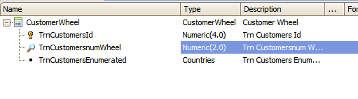
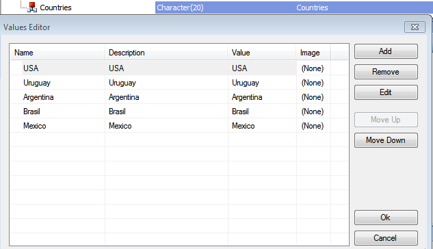
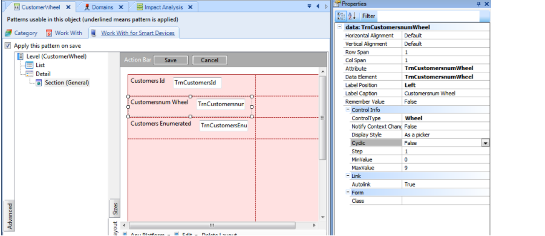
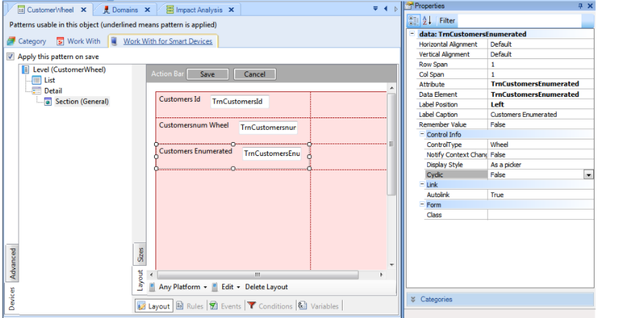
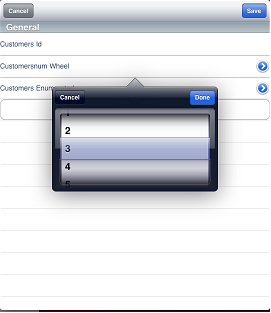
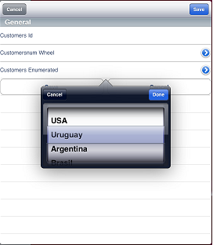
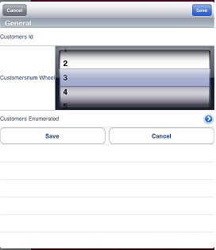
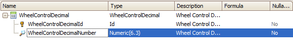
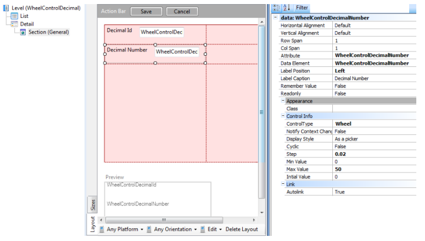
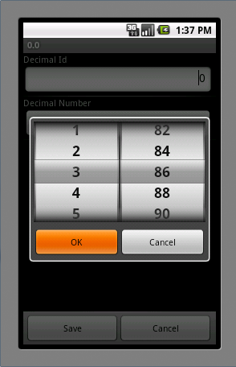

Sometimes you need to navigate through the values a field can adopt. The wheel control has gained popularity with the touch screen interface and is very used in these cases. You can scroll through an Enumerated Domain or Numeric values to select the value you want.
In this article, it is explained the most important concepts of the wheel control and there is an example on how to use it.
This control applies to the following data types:
Let's focus on the last two.
The following Transaction object will be used with the Work With pattern applied.

The Transaction contains an attribute based on an Enumerated Domain (TrnCustomersEnumerated) and an attribute based on the Numeric data type (TrnCustomersNumWheel).
Enumerated Domain:

To enable the control, go to the Section (General) under Detail node, and select the Edit layout. Select the Numeric attribute (TrnCustomersNumWheel) and change the Control Type property to Wheel.

This will enable some other properties.
| Notify Context Change | This property is used for event handling. |
| Display Style | "Inline" or "As a picker" values. You can select how this control is seen. The default value is "As a picker". This property has an effect only in Apple devices. For Android devices, the wheel control is always displayed as a picker. This restriction is imposed by the platform itself. |
| Cyclic | You can enable this property if you want the last value to be continued by the first one. |
For Numeric based attributes:
| Step | The incrementation from one value to another. |
| Min Value | The minimum value the control will show to select. |
| Max Value | The maximum value the control will enable you to select. |
For the Enumerated attribute let's do the same:
| Control type | Wheel |

There are no particular properties enabled, just the General Wheel control properties.
Done, press F5.



The wheel control can also be applied to a field based on a numeric with decimals. An example:


Using decimals you can specify decimal step (in the example 0.02) and after deploying the application the control is displayed as follows:

| Backlinks | ||
| Control Type property | Category:Control Types | HowTo: Using MultiWheel Control |
| Toc:Native Mobile Applications Development | ||